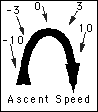

Before sprites came around, there programming games in REALbasic was almost impossible. They had to be run in a canvas or a window's .Graphics property, and were a pain to write. You had to create all the graphics, and then manually draw them in the paint event. Then, to move them, you had to erase the graphic, and redraw it in the new spot. This was a hassle, and consistently produced horribly flickery programs. Try it some time! Make a simple program that animates a picture inside a canvas. Even on my 200 Mhz computer, it flickers like crazy!
Then, in RB DR1r34, one of the most important additions ever was made. What was it? The Sprite Surface. Now, instead of doing all the graphics code manually, the sprite surface could take care of it for you. Better yet, it was flicker-free! It was buggy, but it was certainly an improvement. However, learning how to use the SpriteSurface control was one of the harder things in RB. This article will guide you through that process.
Sprites
A sprite is a 2D object that moves. It's that simple. If you go by this definition, the sprite controls and classes in RB are all well named. Currently, there's one control, and one class associated with sprites: the SpriteSurface control, and the Sprite class.
Setting it up
Getting started is easy. Simply drag the SpriteSurface icon (see right)
into a window. You now have a sprite surface. However, it doesn't do much good. If
you run the program, nothing happens. Well, maybe it isn't that easy after all...
The next thing that you have to do is create a sprite. Sprites are the pictures that will be animated on the SpriteSufarce (makes sense, doesn't it?). These have three main properties: Image, which contains the sprite's picture, and X and Y, which control the sprite's position.
Creating the Sprite
So, how do you go about creating a sprite. Well, it's not as hard as it might sound. First of all, you should create a new variable. Let's call it Guy, because it will be the main character of a simple game.
To create it, choose "New Variable…" from the Edit menu. Then type "Guy as Picture". Congratulations! You've just created a sprite. Now, you have to set it up. First of all, we need an image for the main character. You can make your own, or you can just use the one that's on the left. It's not much, but it'll do.
After you've saved the picture, drag it into your project window. It should be called "GuyPict". Now, in the window's open event, put this code:
Sub Open()
Guy=SpriteSurface1.NewSprite(GuyPict, 100, 100)
End Sub
That one line tells the SpriteSurface that you want Guy to be a sprite on it. The parameters tell the sprite surface what Guy should look like, and where he should appear.
If you run the program now, it still doesn't do anything. However, this is easy to fix. Just make a new button in the window, and name it "BtnRun". Then double-click it to open the code editor. After it appears, type the following code:
Sub Action()
SpriteSurface1.Run
End Sub
Now, your window should look something like this:
If you run the program now, and click the run button, it should make the screen go blank, and display your main character around the top left of the screen.
Making it move
After click the run button, simply click the mouse to return to your program. Well, it works, but it sure doesn't do much! Now, it's time to let the user control your main character. For a start, let's let the character move left and right, and jump.
Well, making the character move left an right should be easy. Just change it's X value by a few pixels. However, jusmping is harder. To jump, the character must first go up, and then go down. Worse yet, it has to slow down as it reaches it's maximum height!
Fortunately, this type of movement is a perfect parabola. We won't be using a formula to calculate this though. I've found that there is an easier way...
Jumping
If you think about it, when a person jumps, they start off by going up with a high speed. Then, as gravity begins to affect them, they slow down. Eventually, it effects them so much that they start moving down. This applies to computer characters too. They start off by going up quickly, but then slow down. However, it's much simpler on a computer. Here's the easiest way to do it.
 When
the character first jumps, let's say its up-speed is 10 pixels per frame. However,
every frame, that speed slows down by a little bit. The first frame is 10 pixels
a frame. The next is 9.5, and so on. Every frame moves the character up the correct
amount, and then decreases that amount by 0.5. Eventually, this value reaches zero,
and he doesn't move at all. Then, it becomes a negative number, and the character
begins to move back down. As you can see from the figure at the right, it's just
what we want to happen! So, how do we apply this to our program? Well, that's what
the next section is about.
Putting in the jumps
First of all, we'll want to create a variable to hold the speed of the ascent. Let's call this variable "JumpSpeed". It should be a single. Next off, we'll want to make a boolean called "Jumping" that tells us whether or not a jump is in progress.
Now, go to the SpriteSurface's NextFrame event. Put in this code (you don't have to include the comments:
Sub NextFrame()
// Check to see if the Up Arrow is pressed.
If me.KeyPressed(126) then // 126 is the
ID of the up arrow
If not Jumping then //
Can't jump while you're jumping!
Jumping = true
JumpSpeed=10
End If
End If
If Jumping then //
Do the actual jump
Guy.Y=Guy.Y-JumpSpeed //
Move the guy.
JumpSpeed=JumpSpeed-0.5 //
Slow him down a tad.
End If
If Guy.Y>200 and Jumping then // He has to stop some time!
Guy.Y=200
Jumping=False
JumpSpeed=0
End If
End Sub
Well, that wasn't too bad. The first section checks to see if the user wants to start a jump. If the up arrow is pressed, and the guy isn't currently jumping, then a jump is started.
The second section occurs if the guy is in the air. It moves him up (i.e. it decreases his Y value), and then slows down the speed of his jump. Eventually, JumpSpeed will become negative, and he'll come back down again.
The final block of code checks to see if he's hit the ground. If this weren't here, he'd go up, and then fall for all eternity (or at least until you stop him). If his Y coordinate is over 200, it ends the jump.
The worst is over! Now you can add the easy part: Moving left and right.
Moving Left and Right
If you made it through the last part, this part should be a snap. To move the guy, all we need to do is increase or decrease his X coordinate. So, just tack on this code to the start of the NextFrame event:
If me.KeyPressed(123) then //
123 is the Left Arrow
Guy.X=Guy.X-5 //
Move him left.
ElseIf me.KeyPressed(124) then // 124 is the Right Arrow
Guy.X=Guy.X+5 //
Move him right.
End If
And now you're done!! Just save your project, run it, and click the Run button. You have a simple little jumping and moving game. It's certainly not something you could sell for money, but you've made a game using sprites!
In case you don't want to do it on your own...
If you don't want to type all this (c'mon! It's not THAT much!), I've included a completed version of this file with the magazine. If you're viewing it on the internet, click here to get it. If you downloaded it, just open up the Files folder.